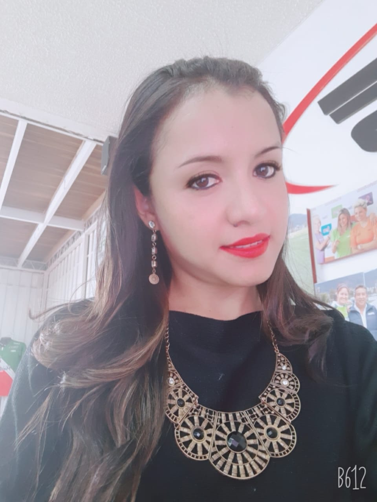
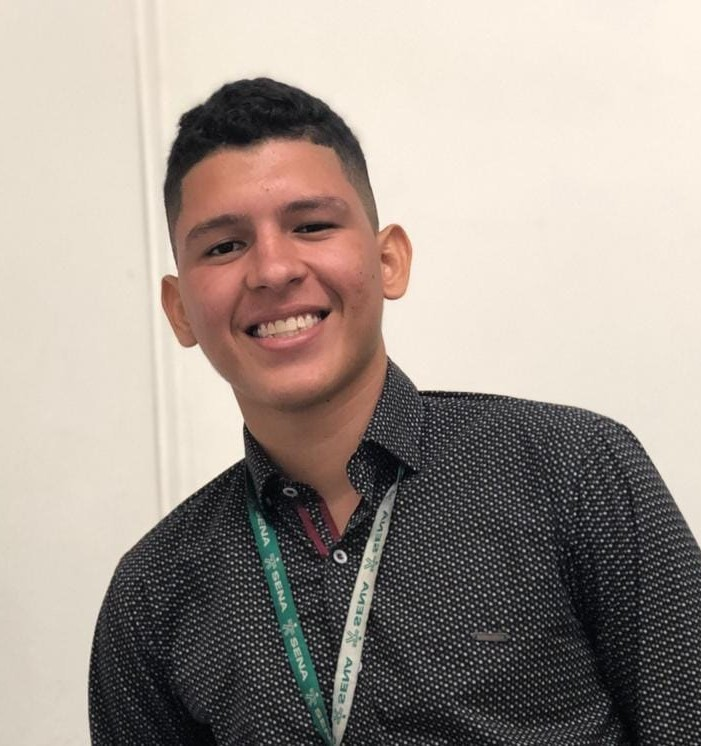
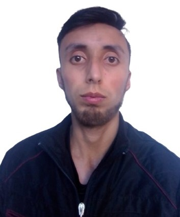

Equipo de Trabajo
Edad: 20 años
Ingenieria Civil 6 semestre
Universidad de Nariño
Técnico en Biocomercio
Estudiante de ingeniera y aspiro a ampliar mis conocimientos en el mundo de la programación

Edad: 32 años
Universidad UNAD
Tecnología en Desarrollo de Software

Edad: 18 años
Ingeniería en Sistemas 6 semestre
Universidad Areandina Valledupar
Técnico en sistemas y Tecnólogo en Gestión de Redes
Soy empleado me dedico a trabajar en el área de las telecomunicaciones y me gusta aprender otros campos relacionados con la programación e ingeniería

Edad: 28 años
4 semestre Ingenieria de Sistemas
Universidad Distrital
Francisco José de Caldas
Pasatiempos como leer, ir a cine, escuchar música, pasar tiempo con amigos.
Esttudiante programación MisiónTic 2020.